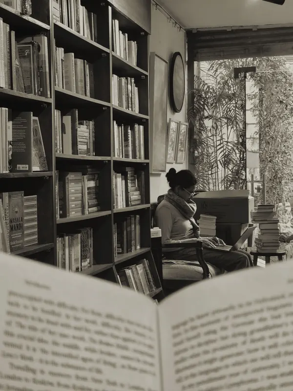
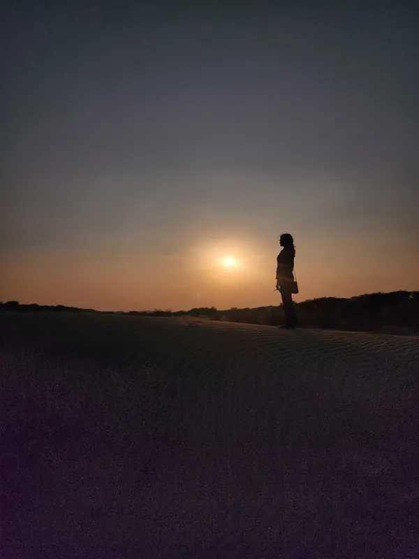
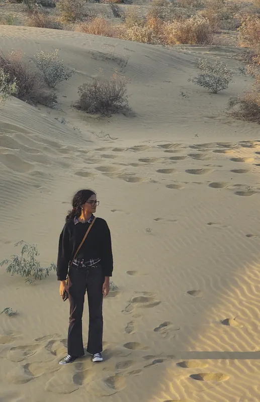

A multimedia storyteller with a literature degree, a banker’s head for numbers and a phone full of photographs.
Scroll
00 — The Foyer
I studied literature,  and edited esports journalism on deadline. Different rooms, one obsession: how a story finds its medium.
and edited esports journalism on deadline. Different rooms, one obsession: how a story finds its medium. 
About
I’m Maria, an English literature graduate from the University of Delhi, now in wealth management in Kerala. Around the day job (and sometimes right in the middle of it) I write, edit, shoot, produce music and co-host a satirical podcast in the making.
This site is a museum of the mediated life I’ve lived so far. Every room holds a different medium. Walk through.
the tour
The floor plan
Four rooms. One story.
Pick a door. Each room collects the work of one medium, from balance sheets to backstage.


By the numbers
The ledger, so far.
- ~200 High-net-worth client relationships managed at ICICI Bank
- 5.2K Streams in a single year for an independent artist, heard in 47 countries
- 13yrs Of trained music, from jazz to classical, on voice and keys
- 6/6 Trinity College London keyboard grades, every one with Distinction
- 5 Magazine editions curated and designed as editor-in-chief
- 4 Esports essays edited and published, one in a London magazine
From the letters of recommendation
One of the most outstanding professionals I have had the pleasure of working with.
A remarkable command of English, with a keen eye for detail and a strong grasp of editorial processes.
She showed true grasp of what people want to listen to.
This ability to dedicate herself to a cause is what I will remember as her defining feature.
Ms. Kurian is an extremely bright and dedicated student.


Currently
Managing wealth by day, building stories by night.
- Working
- Relationship Manager, Wealth & Trade, ICICI Bank, Kochi
- Making
- Amar Akbar Anthony, a satirical podcast
- Reading
- Financial journalism and long-form investigations
- Shooting
- Whatever the light allows, on a phone